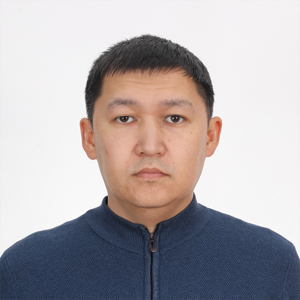

Резюме
Курманов Талгат

О СЕБЕ
Целеустремленный, ответственный, требователен к себе. Обладаю системным мышлением, коммуникабелен, легко интегрирую себя в новый коллектив.
Знание ПК на уровне ведущего системного администратора
Обладаю уверенными знаниями в сфере IT структуры. Большой интерес к информационной безопасности.
ОПЫТ РАБОТЫ
ЦЕНТРАЛЬНАЯ РЕГИОНАЛЬНАЯ ДИРЕКЦИЯ ТЕЛЕКОМУНИКАЦИЙ – филиал АО “КАЗАХТЕЛЕКОМ” – АСТАНА
Инженер по техническому обслуживанию цифровых линий
Март 2011 – по настоящее время
- Ответственность за принятие входящих звонков и обеспечение эффективной поддержки пользователей в сфере диагностики проблем ухудшения качества либо недоступностью услуг (Интернет, IPTV, VoIP, VPN и т.д.)
- Поддержка пользователей г.Астана и по Акмолинской области и консультация в среднем 20 пользователей в день.
- Выезд на место неполадки для устранения причин сбоев в случае необходимости.
АКАДЕМИЧЕСКИЕ КВАЛИФИКАЦИИ
- «Финансы», очная форма
Евразийский Национальный Университет 2004-2008
- “Радиотехника, электроника и телекоммуникации”, заочная форма
Университет "Туран" 2011-2013
КЛЮЧЕВЫЕ НАВЫКИ
- Хорошее знание всех уровней службы поддержки
- Отличная манера общения и навыки обслуживания клиентов
- Знание установки, устранение неполадок и настройка ПК и программного обеспечения
- Опыт технической поддержки серверов и инфраструктуры сетей
- Возможность смены работы и выходных - случайные сверхурочные / ночные часы
- Умение слушать, понимать и решить сложную ситуацию
- Опыт работы c удаленными системами поддержки
- Знание офисных приложений и операционных систем Microsoft
ЛИЧНАЯ ИНФОРМАЦИЯ
Талгат Курманов
Мангилик ел 50, 189
Астана
T: 8 7172 330904
M: 8 777 6588879
E: talgatkk@gmail.com